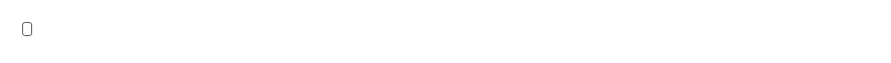

Inline keyboard key rendered as a real <kbd> element and styled as a bordered monospace keycap — a drop-in for a bare <kbd> tag that otherwise renders as unstyled monospace text. Use it wherever an interface names a key the reader is meant to press: command palettes and ⌘K hints, tooltips, menu item accelerators, empty states that suggest a shortcut, onboarding tours, documentation and changelogs, and keyboard-shortcut help sheets. Common asks it answers: "kbd component", "keyboard shortcut badge", "render Cmd+K", "hotkey chip", "keycap style", "shortcut pill", "key badge", "style the kbd tag", "show a keybinding in a tooltip", "⇧⌘P badge", "shortcut hint next to a menu item", "Ctrl+S indicator", "Esc key label", "arrow key hint in docs". shadcn/ui now ships a kbd of its own, so choose deliberately rather than by search rank. Theirs is a flat sans-serif chip with no border at text-xs, and it comes with a KbdGroup wrapper for multi-key sequences, a rule that shrinks icons placed inside it, and one that inverts its colours inside a tooltip — if you want any of those, take theirs. Theirs also holds a minimum square footprint and centres its content, which suits single letters sitting in a row; this one is padding-driven, so a multi-character label like Esc, Tab or Enter sits evenly inside the same border. This one is a single element with a border, monospace text at 10px and slightly wider padding, so it reads as a physical key rather than as inline text and stays legible against surrounding prose at small sizes. Both are dependency-free, use the semantic <kbd> tag so assistive technology announces the content as keyboard input, and theme through shadcn tokens. For several keys in a row, wrap them in a flex container with a gap yourself, or install keyboard-shortcuts, which composes this into a grouped help sheet opened with ?.

Rendered on the shadcn default neutral palette with harness-generated props.
pnpm dlx shadcn@4.21.0 add @pulld/kbd
| licence | POINTER |
|---|---|
| primitive base | none |
| type | registry:ui |
| files | src/components/ui/kbd.tsx |
| npm deps pulled | none beyond the pre-installed peer set |
| registry deps | — |
| semantic / palette / hex | 2 / 0 / 0 |
| writes shared ui/ | yes — can overwrite the project’s own primitives |